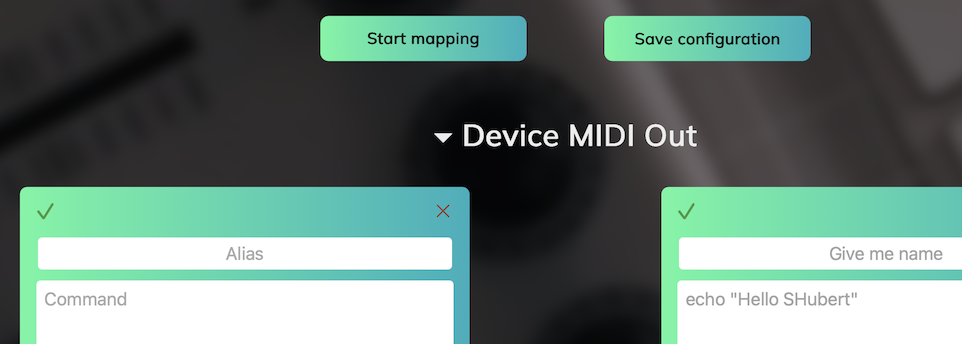
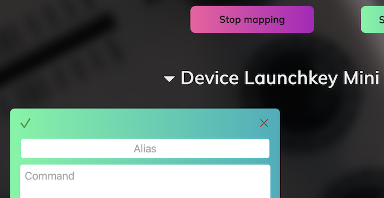
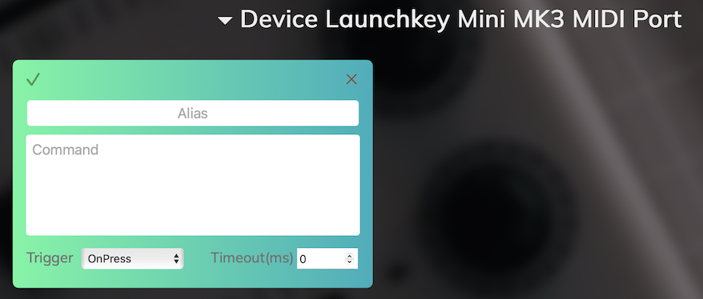
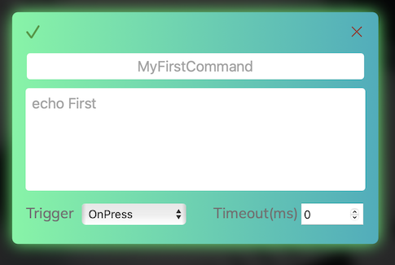

Утилита позволяет использовать миди контроллер для отправки команд в терминал. Может быть полезна для тестирования API или в пет-проектах. Утилита позволяет быстро замапить кнопки любого контроллера и поддерживает несколько контроллеров одновременно.
Запустите утилиту как приложение (Windows/MacOS) или в докер контейнере (Linux) и подключите контроллер. Откройте ссылку http://localhost:8088 для настройки контроллера в веб интерфейсе.

На главной странице отображаются все настроенные миди контроллеры и карточки для каждого контроллера где задается маппинг кнопок на команды. Изначально загружен демо-конфиг который не будет работать с вашим контроллером, он только для ознакомления
Для настройки вашего контроллера:
Нажмите кнопку "Start Mapping" (кнопка поменяет цвет)

Нажмите кнопку/поверните ручку на контроллере. Должна появиться новая карточка, она будет подсвечена и страница проскроллится к ней

Заполните поля
Теперь по нажатию настроенных кнопок будет выполняться назначенная команда. Соответствующая карточка будет подсвечена при нажатии.

Веб страницу на этом этапе можно закрыть, программа будет работать в фоне
Режим Mapping нужен только для создания новых карточек. Редактировать уже созданные карточки можно и в обычном режиме
? Маппинг контроллера не работает
2025/05/18 06:55:53 Current: [Launchkey Mini MK3 MIDI Port Launchkey Mini MK3 DAW Port]
? Команда не работает
2025/05/18 06:59:38 command not found event {Launchkey Mini MK3 MIDI Port 9 49 0} not found
? Ничего не работает